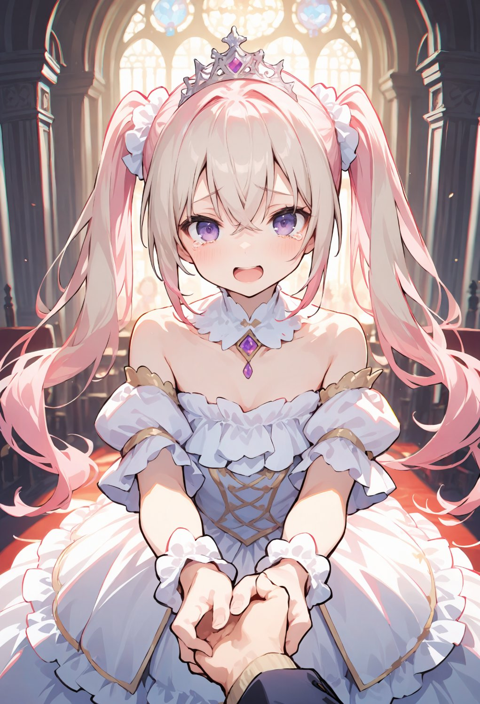

第3話
「救世主として召喚された勇者様、どうかこの世界を救ってください！」 「ええっ!? 救世主!? 私、ただのJKだよ!?」 美桜ちゃんは慌てて叫ぶ。 だが、ミユ姫の表情は真剣そのものだった。
「この世界は、魔王の復活によって滅びの危機に瀕しています。勇者さまの力だけが、それを防ぐことができるのです」 ミユ姫の声には切実な響きがあった。
「いやいや、私そういうの無理だって！普通に家に帰りたいんだけど！」 美桜ちゃんは困りながら、状況を否定する。 それでも、ミユ姫は彼女をじっと見つめた。
「わかります。突然召喚されて、困惑されるのも当然です……。ですが、この世界を救うためには、あなたの力が必要なのです」 姫は一歩前に進み、手を胸の前で握りしめた。
「そして、この世界の謎を解き明かすことが、あなたの元の世界に帰るための手がかりになるかもしれません」 その言葉に、美桜ちゃんの動きが止まる。
「帰れる……かも？」 美桜ちゃんは小さく呟いた。
「確実なことは言えませんが、召喚術の記録には、その方法が書かれている可能性があります。ですが、そのためにも、あなたの力が必要なのです」 ミユ姫の目は涙で潤んでいた。 その真摯な態度に、美桜ちゃんはぐっと言葉を詰まらせた。
「……ちょっと待って。なんで私がそんな重要な役目を？」 半信半疑で問いかける美桜ちゃんに、ミユ姫は小さく微笑みながら答えた。
「あなたがこの世界に召喚された存在だからです。召喚には必ず何か意味があるはず。そして、あなたにしかできないことがあると、私は信じています。」
美桜ちゃんはしばらく黙り込んだ。 帰る手がかりが見つかるかもしれない――その言葉が、頭の中をぐるぐる巡る。

「……しょうがないなあ。ちょっとだけなら協力するよ。でも、本当に帰れる方法、見つけてよね！」 そう言って観念したようにため息をつく美桜ちゃんに、ミユ姫はパッと明るい笑顔を見せた。
「ありがとうございます、勇者さま！」 ミユ姫は美桜ちゃんの両手をぎゅっと握りしめた。 その顔には安堵と感謝の色が浮かんでいる。
「その『勇者』っていうの、なんかムズムズするね。私、美桜。美桜って呼んで！」 「勇者様のお名前はミオというのですね！ミオ様とお呼びしてもよろしいですか？」 「『様』っていうのも固いなぁ。友達はみんな美桜ちゃんって呼ぶよ。」 「では、ミオちゃんとお呼びしますね♪」 「えへへ。」
こうして、美桜ちゃんは「勇者」としての第一歩を踏み出したのだった。
― この話はここまで ―